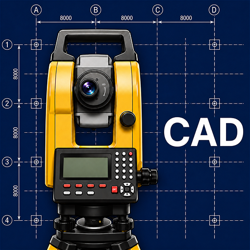

APK
下载应用
GeoSystems Studio 官方 APK 文件和应用商店链接。如果无法使用应用商店，也可以通过 APK 文件直接安装应用。
安装时 Android 可能会要求允许从浏览器安装应用。请仅从 GeoSystems Studio 官方网站使用 APK 文件。
APK
GeoSystems Studio 官方 APK 文件和应用商店链接。如果无法使用应用商店，也可以通过 APK 文件直接安装应用。

安装时 Android 可能会要求允许从浏览器安装应用。请仅从 GeoSystems Studio 官方网站使用 APK 文件。